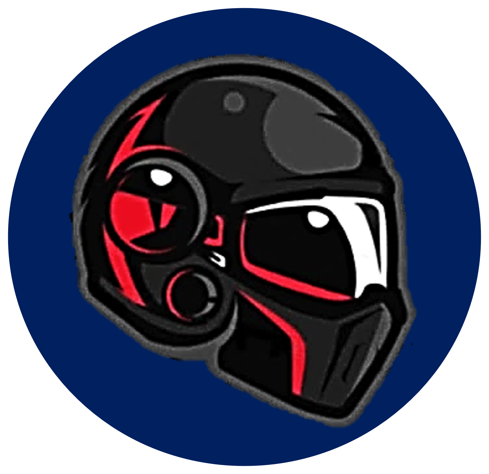

Hola, yo soy CaniCan, un muchacho apasionado de esta increíble comunidad centrada en la creación de
contenido sobre
videojuegos. Mi habilidad para jugar, analizar y comunicar se
combinan en un cóctel único que inspira a todos a explorar, debatir y apreciar los videojuegos en su
totalidad.
A través de transmisiones en vivo, reseñas detalladas y conversaciones apasionantes, invito a la
comunidad a sumergirse en mundos virtuales y a analizar cada aspecto de los juegos. Mantenerme
actualizado con las últimas tendencias y tecnologías de la industria es
una prioridad, asegurando que la comunidad evolucione constantemente y atraiga a nuevos miembros con
la
misma devoción por los juegos.